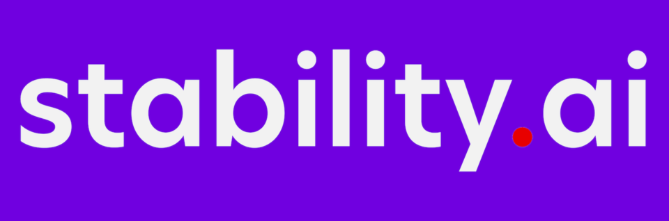

스태빌리티 AI Stability AI
스태빌리티 AI(Stability AI)는 영국 런던에 본사를 둔 인공지능 기업으로, 텍스트-이미지 생성 모델 스테이블 디퓨전으로 가장 잘 알려져 있다.
최종 업데이트

스태빌리티 AI는 어떤 브랜드인가
스태빌리티 AI는 텍스트로부터 이미지를 생성하는 스테이블 디퓨전을 개발한 인공지능 기업이다. 스테이블 디퓨전 외에도 비디오, 오디오, 3D, 텍스트 모델을 개발하며, ARM 아키텍처와 협력해 텍스트-오디오 모델 Stable Audio Open을 모바일 장치에 최적화하기도 했다.
회사는 2024년 3월 에마드 모스타크가 CEO직에서 사임한 뒤 산 산 웡과 크리스티안 라포르테가 임시 공동 CEO를 맡았고, 같은 해 6월에는 웨타 디지털 전 CEO 프렘 아카라주가 새 CEO로 임명되었다. 그레이크로프트, 코투 매니지먼트, 라이트스피드 벤처 파트너스 등 여러 투자 그룹으로부터 투자를 유치했으며, 숀 파커가 이사회 상임 회장으로, 제임스 카메론이 이사회 구성원으로 합류했다.
한편 게티 이미지로부터 이미지 무단 사용을 이유로 소송을 제기받는 등 법적 문제도 겹쳐 있다.
스태빌리티 AI는 어떻게 시작되고 성장했나
스태빌리티 AI는 2019년 에마드 모스타크와 사이러스 호즈가 설립했다. 2022년 8월 소스 코드와 가중치를 공개하는 텍스트-이미지 모델 스테이블 디퓨전을 출시하며 명성을 얻었다.
2024년 3월 23일 에마드 모스타크가 CEO직에서 사임했고, 이사회는 최고운영책임자 산 산 웡과 최고기술책임자 크리스티안 라포르테를 임시 공동 CEO로 임명했다. 2024년 6월 25일에는 시각효과 기업 웨타 디지털의 전 CEO였던 프렘 아카라주가 새 CEO로 임명되었다.
스태빌리티 AI의 브랜드 아이덴티티는 무엇인가
소스 코드와 가중치를 공개하는 방식으로 스테이블 디퓨전을 출시해 생성형 AI 이미지 모델을 대중에게 개방한 점이 특징이다.
스태빌리티 AI의 대표 제품과 서비스는 무엇인가
스태빌리티 AI는 텍스트 설명으로부터 이미지를 생성하는 텍스트-이미지 모델 스테이블 디퓨전을 통해 생성형 AI 분야에 기여했다. 스테이블 디퓨전은 소스 코드와 가중치를 공개하는 방식으로 출시되었다.
스테이블 디퓨전 외에도 스태빌리티 AI는 비디오, 오디오, 3D, 텍스트 모델을 개발한다. 또한 ARM 아키텍처와 협력하여 텍스트-오디오 모델인 Stable Audio Open을 Arm CPU로 구동되는 모바일 장치에 최적화했다.
스태빌리티 AI는 지금 어떤 상태인가
2024년 6월 프렘 아카라주가 CEO로 임명되며 그레이크로프트, 코투 매니지먼트, 사운드 벤처스, 라이트스피드 벤처 파트너스, 오쇼너시 벤처스 등으로부터 투자 라운드를 완료했다고 발표했다. 같은 시기 숀 파커가 이사회 상임 회장으로 합류했고, 2024년 9월에는 제임스 카메론이 이사회에 합류했다.
한편 스태빌리티 AI는 공동 설립자 사이러스 호즈로부터 사기 등의 혐의로 소송을 제기받았으며, 게티 이미지로부터도 이미지 무단 사용을 이유로 소송을 제기받는 등 법적 문제에 직면해 있다.
스태빌리티 AI 로고는 어떻게 변해왔나
자주 묻는 질문
스태빌리티 AI는 어느 나라 브랜드인가요?
스태빌리티 AI는 영국의 AI·인공지능 브랜드입니다.
스태빌리티 AI는 언제 설립되었나요?
스태빌리티 AI는 2019년 설립되었습니다.
스태빌리티 AI의 브랜드 아이덴티티는 무엇인가요?
소스 코드와 가중치를 공개하는 방식으로 스테이블 디퓨전을 출시해 생성형 AI 이미지 모델을 대중에게 개방한 점이 특징이다.
스태빌리티 AI의 대표 제품은 무엇인가요?
스태빌리티 AI는 텍스트 설명으로부터 이미지를 생성하는 텍스트-이미지 모델 스테이블 디퓨전을 통해 생성형 AI 분야에 기여했다.
스태빌리티 AI는 현재 어떤 상태인가요?
2024년 6월 프렘 아카라주가 CEO로 임명되며 그레이크로프트, 코투 매니지먼트, 사운드 벤처스, 라이트스피드 벤처 파트너스, 오쇼너시 벤처스 등으로부터 투자 라운드를 완료했다고 발표했다.
스태빌리티 AI의 창업자는 누구인가요?
스태빌리티 AI의 창업자는 Emad Mostaque, Cyrus Hodes입니다(위키데이터 기준).
스태빌리티 AI의 본사는 어디에 있나요?
스태빌리티 AI의 본사는 런던에 있습니다(위키데이터 기준).
출처와 검증
스태빌리티 AI 관련 참고: 공식 웹사이트 · 위키데이터 Q123592234 · 한국어 위키백과 · 영어 위키백과. 브랜드명은 한글과 원어를 함께 표기하되 데이터에 없는 표기는 만들지 않습니다. 기원 국가·설립연도는 검수된 정의문에서 확인된 값을 우선하고, 없을 때만 공식 웹사이트 URL이 일치하는 위키데이터 개체의 값을 씁니다. 위키데이터 값은 2026-09-26 기준입니다.